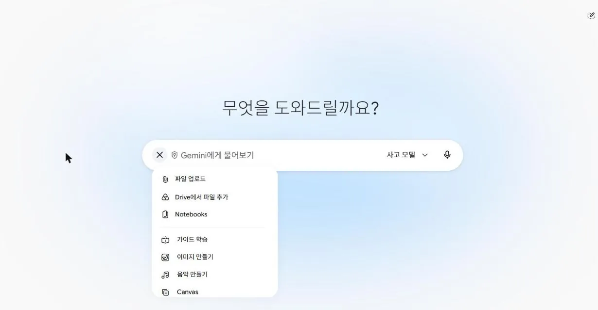
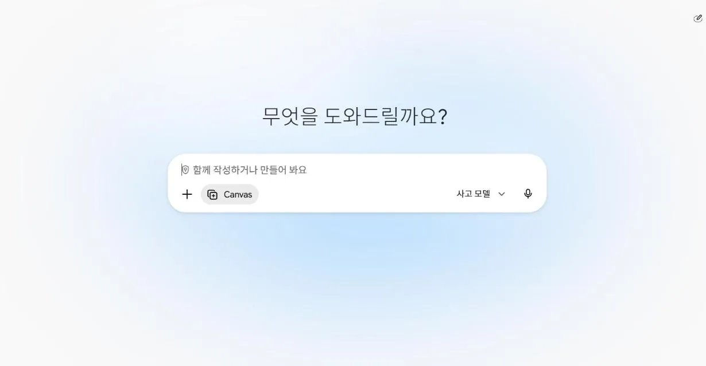
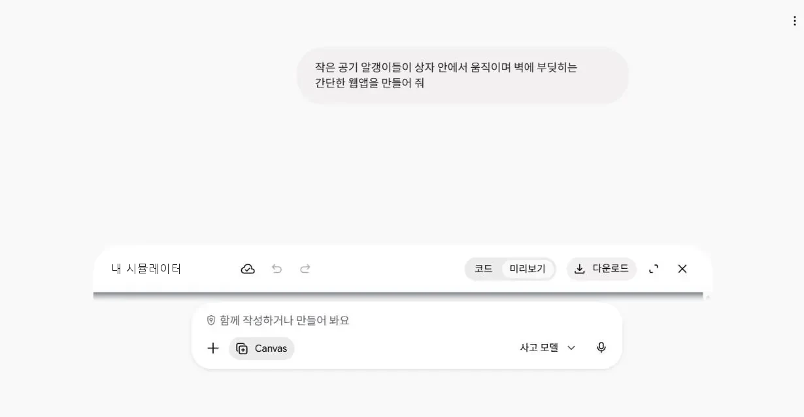
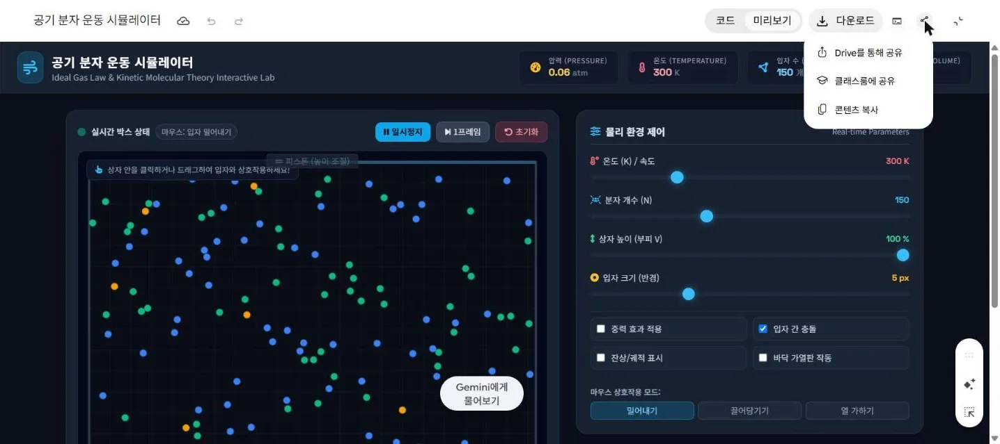

- 계정 — 학생은 질문나무·도장판과 같은 계정(학년·반·번호 + 비밀번호)으로 로그인합니다. 허브(선생님과학)에서 로그인해 두었다면 이 페이지는 바로 이어집니다. 기록은 로그인한 학생 계정에만 저장되고, 다른 학생의 기록은 서버 규칙상 읽거나 고칠 수 없습니다.
- 측정 부피 — 기본 예시는 60, 55, 50, 45, 40, 35, 30, 25, 20 mL 입니다(5 mL씩). 바꾸려면 아래 칸에 쉼표로 적고 「링크 만들기」로 만든 주소를 학생에게 알려 주세요. (학생은 표에서 언제든 고칠 수 있어요)
- 역할 룰렛 — 학생이 각자 노트북에 값을 적어야 해서 이번 수업에서는 잠가 두었습니다(역할은 모둠에서 정해 각자 「내 역할」을 고름). 쓰려면 1단계의 「🔓 룰렛 열기」 또는 주소 끝 ?roulette=1.
- 6단계 올리기 — Studentgithub 「보일의 법칙 가상실험실」 과제(주소 끝 ?t=boyle)가 열려 있어야 합니다. 올린 판은 처음에 「확인 대기」이니 …/studentgithub/?t=boyle#/admin → 올린 판 확인에서 공개하세요.
- 학생 기록 보기 — 교사 대시보드(📊 혼자 탐구 기록)에 교사 계정으로 로그인 → 단원 「기체의 성질」 → 이 페이지의 키 gas-boyle-lab. 학생이 쓴 글·표·그래프 설정·프롬프트·점검·업로드 자기보고가 한 줄로 모입니다.
- 연결 점검 — 수업 전에 학생 계정 하나로 로그인해 기록이 저장되는지 확인하세요.
45분 흐름(안): ① 역할 정하기 2분 · ② 실험·기록 11분 · ③ 그래프 4분 · ④ 생각 쓰기 6분 · ⑤ 시뮬레이터 10분 · ⑥ 공유 4분 · ⑦ 초코파이 8분. 5단계에서 AI가 코드를 만드는 30초~1분은 조용히 기다리며 예상을 적게 합니다.
모둠 실험 준비 — 역할 정하기
모둠이 주사기 하나와 압력계 하나로 함께 실험해요. 모둠에서 이야기해 역할을 나누고, 아래에서 내 역할을 고르면 1단계가 끝나요. (측정값은 모두 각자 내 표에 적어요.)
3명이면 데이터 기록자가 탐구 검증자를 겸하고, 5명이면 실험 조작자가 2명이에요.
내 역할
— 또는 주소 끝에 ?roulette=1
① 모둠원 이름
② 결과
나는 누구? 룰렛을 돌린 노트북이라면 내 이름을 고르면 위 「내 역할」이 자동으로 들어와요
모둠 실험 — 내 표에 기록하기
모둠이 같은 실험을 하고, 측정값은 각자 내 표에 적어요. 내 기록은 내 계정에 따로 저장돼요.
실험 방법 — 모둠이 함께, 역할대로
측정할 부피(mL): 60 → 55 → 50 → 45 → 40 → 35 → 30 → 25 → 20
- [실험 조작자] 주사기 손잡이를 60 mL 눈금에 맞춰요. 압력계를 연결하기 전에 먼저 맞춰요. 연결하는 순간 주사기 속 공기가 갇혀요.
- [실험 조작자] 주사기 끝에 압력계를 연결해요. 공기가 새지 않게 단단히 끼워요.
- [압력 관찰자] 압력계 숫자를 읽어 1기압 근처인지 확인해요. (단위가 kPa이면 100 근처) 1기압 근처가 아니면(예: 0 근처) 선생님을 불러요. 이 값이 맨 처음 부피(60 mL)일 때의 압력이에요.
- [데이터 기록자] 부피와 읽은 압력을 표 첫 줄에 적어요. [탐구 검증자]는 읽은 값과 적은 값이 같은지 확인해요.
- [실험 조작자] 부피를 55 mL로 천천히 줄여요. 압력계 숫자가 멈추면 [압력 관찰자]가 읽고, 기록하고, 확인해요.
- 같은 방법으로 50 → 45 → 40 → 35 → 30 → 25 → 20 mL까지 5 mL씩 줄이며 압력을 측정해요.
- 이상한 값이 있으면 그 부피에서 다시 측정해요. 모두 끝나면 측정값이 어떻게 변하는지 규칙을 찾아봐요.
- 게이지압과 절대압 — 60 mL에 맞춘 뒤 연결한 직후 압력계가 약 100 kPa(1기압)을 나타내면 절대압이고, 0을 나타내면 게이지압(대기압을 뺀 값)입니다. 학생에게는 「1기압 근처가 아니면 선생님을 불러요」로 안내해 두었습니다. 부피↓ → 압력↑ 경향은 둘 다 보이지만, 「부피×압력이 일정」은 절대압에서만 맞습니다. 게이지압 장치라면 학생이 읽은 값에 대기압을 더해 절대압으로 바꿔 보게 하세요(3단계의 「부피×압력」 축에서 비교).
- 사용 범위(중요) — 이상 기체로 보면 부피를 60 mL → 30 mL로 줄일 때 절대압은 약 2배(약 200 kPa), 20 mL에서는 약 3배(약 3기압, 약 300 kPa)입니다. 압력계의 최대 측정·허용 압력이 이보다 낮으면 최소 부피를 올려(예: 30 mL) 위의 「측정 부피」 링크를 바꿔 주세요. 주사기와 연결관이 빠지지 않는지도 미리 확인하세요.
- 연결 순서 — 주사기를 먼저 60 mL에 맞추고 나서 압력계를 연결해야, 갇힌 공기가 바깥 공기(1기압)와 같은 상태에서 시작합니다. 연결관·압력계 안쪽 부피(죽은 부피) 때문에 부피가 작을수록 값이 이상 기체 값보다 조금 낮게 나올 수 있고, 「부피×압력」이 완전히 일정하지 않은 것은 정상입니다.
- 빨리 누르면 공기가 데워져 값이 더 크게 나옵니다. 「천천히 누르고, 숫자가 멈춘 뒤에 읽기」를 강조하세요. 연결부에서 공기가 새면 값이 계속 내려갑니다.
- 이 페이지는 측정값을 대신 만들거나 정답을 채워 주지 않습니다.
내 측정 기록
측정할 부피 mL (부피 칸은 미리 들어 있어요. 압력 칸은 직접 측정해서 적어요)
| 번호 | 부피 (mL) | 압력 |
|---|
실험 데이터를 그래프로 바꾸기
내 표의 값이 그래프의 점이 돼요. 가로축과 세로축을 골라 보고, 그래프에서 무엇이 보이는지 찾아봐요.
그래프가 그려져요
그래프로 알아보기
내 생각을 과학적으로 설명하기
정답을 보기 전에, 실험 결과를 내 말로 설명해 봐요. 여기에 쓴 글이 5단계에서 시뮬레이터를 만드는 내 프롬프트에 그대로 들어가요.
내 데이터와 그래프 다시 보기
틀려도 괜찮아요. 내 생각을 그대로 써요. 쓴 글은 고칠 수 있어요.
- Q1 — 부피가 줄수록 압력이 커진다(실험 값 근거).
- Q2 — 입자의 크기와 개수는 그대로(양이 일정한 닫힌 주사기). 「입자가 작아진다·줄어든다」는 흔한 오개념.
- Q3 — 입자는 끊임없이 모든 방향으로 움직이며 벽에 충돌하고, 부피가 줄면 충돌 횟수(빈도)가 늘어 압력이 커진다. 「입자가 빨라진다」「입자가 커진다」는 오개념(온도가 일정하면 빠르기는 그대로).
나만의 시뮬레이터 만들기
내가 알아낸 규칙을 눈으로 볼 수 있는 시뮬레이터로 만들어요. 아래에서 고른 것과 4단계에 쓴 내 설명이 합쳐져 나만의 프롬프트가 만들어져요.
① 만들고 싶은 시뮬레이터 정하기
② 내 프롬프트 — 4단계에 쓴 내 설명이 자동으로 들어가요
③ 제미나이 캔버스에 붙여넣기
- 제미나이 탭 → 왼쪽 메뉴 새 채팅 → 입력칸 왼쪽 + → 맨 아래 Canvas. (학교 계정인지 확인해요)
- 복사한 프롬프트를 입력칸에 Ctrl+V → 보내기(↑). Enter만 누르면 바로 보내져요!
- 만드는 동안(30초~1분)은 조용히 기다리며 예상을 적어요: 부피를 줄이면 내 시뮬레이터에서는 무엇이 어떻게 보일까?
- 결과 카드의 미리보기에서 직접 조작해 봐요. 이상한 곳은 보이는 것 → 배운 내용 → 고칠 곳 순서로 말해 고치게 해요.




AI가 거절하거나 엉뚱하게 답하면 새 채팅에서 Canvas를 켜고 다시 보내요. 그래도 안 되면 손을 들어요.
④ 실행해 보고 파일로 저장하기
제미나이의 콘텐츠 복사로 복사한 코드를 아래 칸에 붙여넣고 ▶ 실행해 보세요. 여기에 붙인 코드는 이 기기에만 저장되고 서버에는 올라가지 않아요.
⑤ 점검하기 — 내 시뮬레이터를 직접 조작해 확인해요
AI가 자주 틀리는 곳
- 부피를 줄일 때 입자가 빨라져요 → 온도가 일정하면 빠르기는 그대로예요.
- 부피를 바꿀 때 입자가 새로 생기거나 사라져요 / 커지거나 작아져요.
- 압력을 식으로 계산해 보여 줘요 → 벽에 부딪힌 횟수에서 나와야 해요.
- 입자가 바닥으로 가라앉거나 벽 밖으로 빠져나가요.
- 내가 말하지 않은 기능이나 배우지 않은 말이 들어가요.
GitStudentHub에 올리기
내가 만든 과학 시뮬레이터를 세상에 공유해 보세요!
- HTML 파일 저장 — 5단계 ④에서 ⬇ HTML 파일로 저장을 눌러요.
- 브라우저에서 실행 확인 — 저장한 파일을 더블클릭하거나 오류 없이 돌아가는지 봐요.
- GitStudentHub 접속 — 학번만 넣고 들어가요. GitStudentHub 열기 ↗
- HTML 파일 업로드 — 「내 가상실험실 올리기」에서 HTML 파일 열기로 파일을 고르고, 소개 두 칸(무엇을 보여 주나요 · 이렇게 해 보세요)을 써요. 올리기 화면 ↗
- 업로드 결과 확인 — 「내가 올린 판」에 내 시뮬레이터가 생겼는지 봐요. 선생님이 확인하면 전시관에 나와요.
올렸다면 여기에 표시해요 — 내가 직접 체크하는 기록이에요(선생님이 따로 확인해요)
감압용기 속 초코파이
① 실험 전 — 예상하기
감압용기에서 공기를 빼내면 초코파이의 부피는 어떻게 될까?
② 선생님의 감압용기 실험 — 관찰하기
선생님이 보여 주는 초코파이의 변화를 잘 보고, 실제로 어떻게 되었는지 적어요.
③ 정리 — 주사기 실험의 규칙으로 설명하기
- 식품용으로 검증되지 않은 실험 장치에 넣은 초코파이는 먹지 않아요. 간식으로 줄 초코파이는 따로 준비하세요.
- 감압용기는 사용 전에 균열·패킹을 확인하고, 학생이 용기를 직접 들거나 흔들지 않도록 합니다. 공기를 천천히 빼고, 되돌릴 때도 천천히 공기를 넣습니다.
- 초코파이 속(마시멜로·빵의 기포)과 포장 속 공기는 바깥 압력이 낮아지면 팽창합니다. 「주사기 실험: 부피가 줄면 압력이 커진다」를 거꾸로 생각하게 하세요(바깥 압력↓ → 속 기체의 부피↑). 다시 공기를 넣어도 원래 크기로 완전히 돌아오지 않을 수 있습니다.
- 예상은 「확정」 뒤 고칠 수 없습니다. 학생이 잘못 확정했다면 아래 단추로 풀어 주세요.